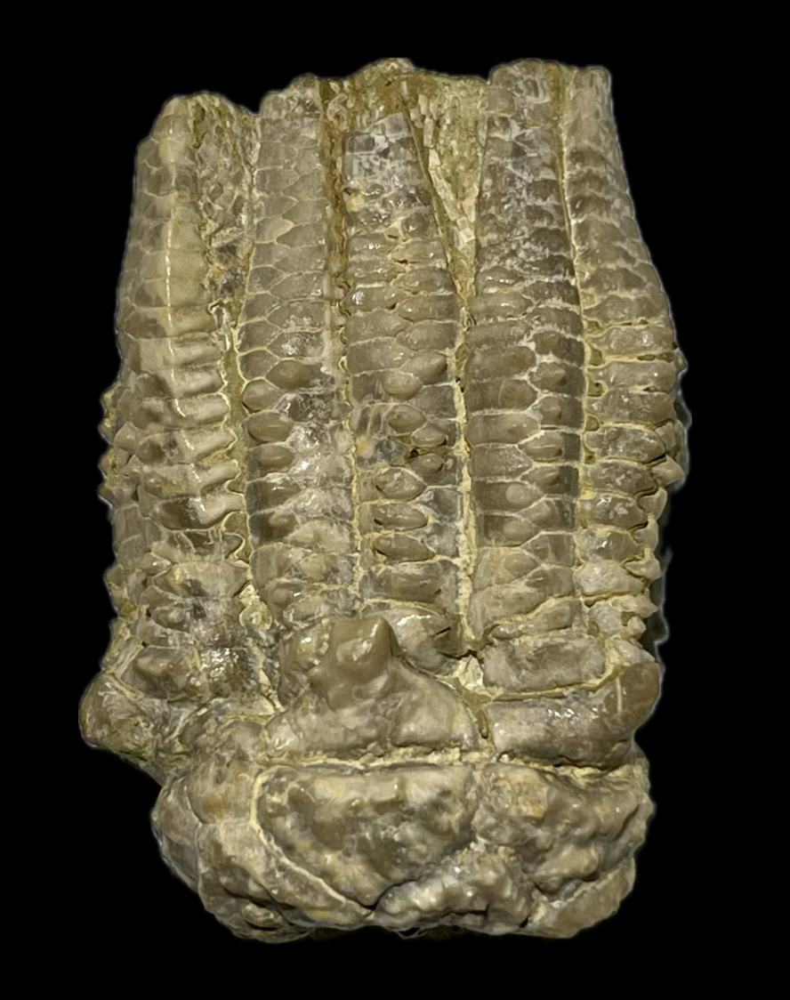
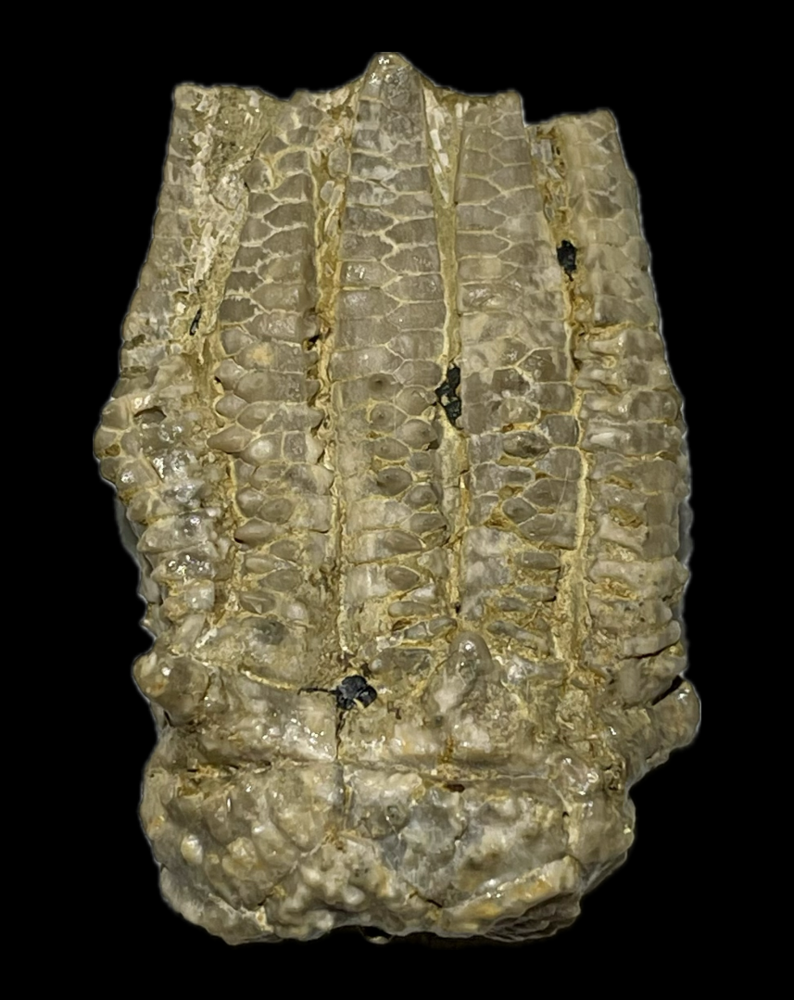
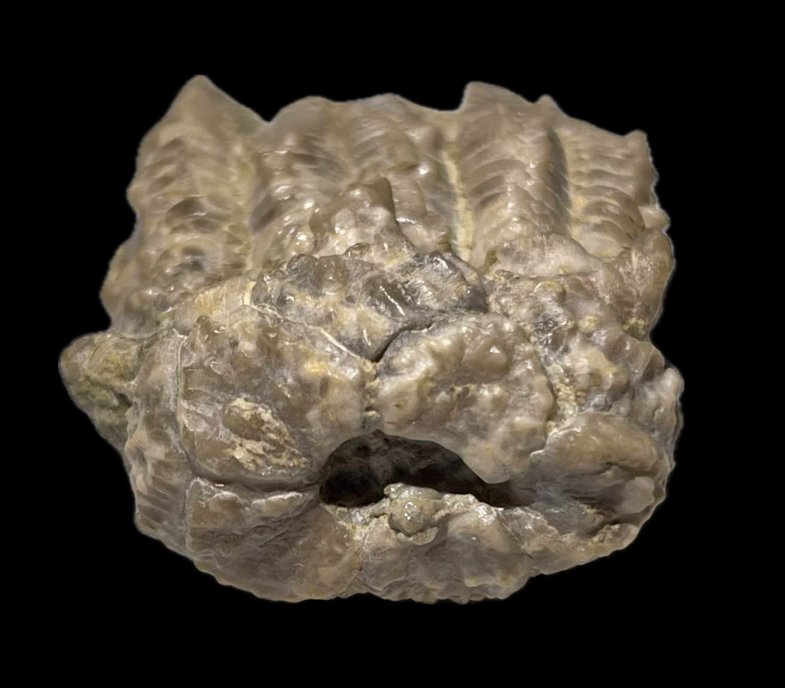

Crinoid
Size: 4.5 cm crown
Graffhamicrinus is a Pennsylvanian crinoid genus thought to be closely related to, and potentially ancestral to, the often co-occurring and highly prolific Delocrinus, exhibiting an essentially identical calyx shape and structure as well as arm construction. It is distinguished from its more common relative mainly by the presence of rich ornamentation on the calyx and lower arms consisting of pustules, granules, ridges or some combination thereof. In addition, Strimple noted that Delocrinus often has primaxils variably extending as spines while Graffhamicrinus rarely does (Strimple 1977). G. profundus is a species of Graffhamicrinus characterized by a particularly deep and wide basal concavity, ornamentation of pustules that coalesce into ridges towards the plate edges, and primaxils produced as blunt spines in an exception to Strimple's observed trend (Strimple 1971). |
   |
|---|
Copyright © 2026 by Samuel Kim, all rights reserved